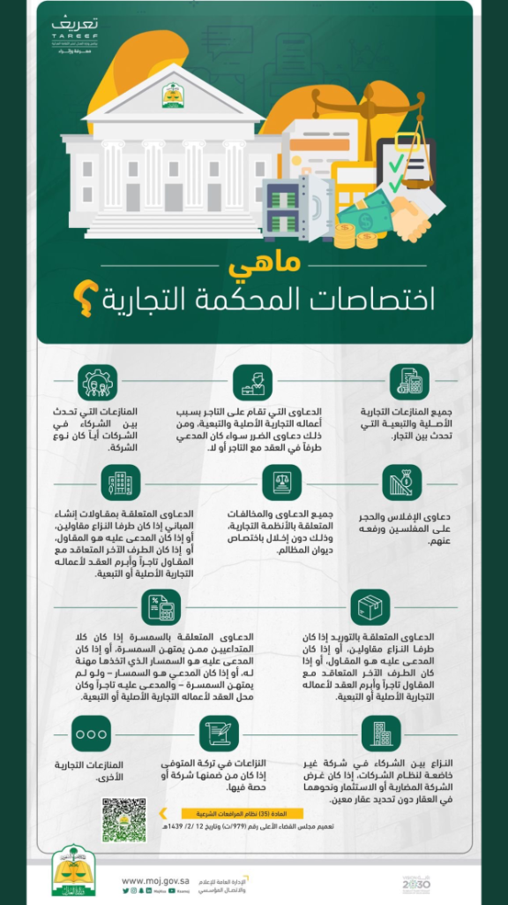

⚠️ تنبيه قضائي بالغ الأهمية لكل مدّعٍ ومحامٍ
يقع الكثير من الأفراد وأصحاب الأعمال في خطأ إجرائي فادح عند إقامة دعاويهم القضائية؛ إذ يسود اعتقاد خاطئ بأن المحكمة التجارية لا تقبل إلا القضايا التي تكون بين التجار حصراً (شركة ضد شركة أو مؤسسة ضد مؤسسة). بناءً على هذا الفهم، يقيم الفرد دعواه أمام المحكمة العامة، ليتفاجأ بعد جلسات ومداولات استمرت أشهراً بـ صرف النظر عن الدعوى لعدم الاختصاص النوعي وأن الاختصاص منعقد أصلاً للمحكمة التجارية!
المعيار الحقيقي للاختصاص: نص المادة (16) من نظام المحاكم التجارية
حددت المادة السادسة عشرة (16) من نظام المحاكم التجارية في المملكة العربية السعودية الولاية القضائية للمحاكم التجارية بشكل حصري ومفصل، وجاءت لتشمل:
- المنازعات التي تنشأ بين التجار بسبب أعمالهم التجارية الأصلية أو التبعية.
-
الدعاوى المقامة على التاجر في منازعات العقود التجارية، متى كانت قيمة المطالبة الأصلية في الدعوى تزيد على مائة ألف ريال (100,000 ريال)، وللمجلس عند الاقتضاء زيادة هذه القيمة.
📌 نقطة محورية: هنا يحق للفرد العادي (غير التاجر) مقاضاة التاجر تجارياً متى تجاوزت المطالبة هذا النصاب!
-
منازعات الشركاء في عقود المشاركة:
⚖️ التعديل النظامي بالمرسوم الملكي رقم (م/191) وتاريخ 29/ 11/ 1444هـ:
عُدلت الفقرة لتكون بالنص الآتي: «المنازعات التي تنشأ عن عقود المشاركة المنصوص عليها في نظام المعاملات المدنية» (شاملاً شركة المضاربة وعقود المشاركة حتى لو كانت مبرمة بين أفراد عاديين دون قيام شركة مقيدة).
- الدعاوى والمخالفات الناشئة عن تطبيق أحكام نظام الشركات.
- الدعاوى والمخالفات الناشئة عن تطبيق أحكام نظام الإفلاس.
- الدعاوى والمخالفات الناشئة عن تطبيق أنظمة الملكية الفكرية (علامات تجارية، براءات اختراع، حقوق مؤلف).
- الدعاوى والمخالفات الناشئة عن تطبيق الأنظمة التجارية الأخرى (كالوكالات التجارية، المنافسة، مكافحة التستر).
- الدعاوى والطلبات المتعلقة بـ الحارس القضائي والأمين والمصفي والخبير المعينين ونحوهم؛ متى كان النزاع متعلقاً بدعوى تختص بنظرها المحكمة.
- دعاوى التعويض عن الأضرار الناشئة عن دعوى سبق نظرها من المحكمة التجارية.
📊 إنفوجرافيك توضيحي: ما هي اختصاصات المحكمة التجارية؟

مرجع رسمي يوضح تفريعات الاختصاص التجاري الصادرة بتعميم المجلس الأعلى للقضاء رقم (979/ت) والمادة (16) من نظام المحاكم التجارية.
لماذا يقع البعض في فخ "صرف النظر لعدم الاختصاص"؟
يخلط الكثير من المتقاضين بين «صفة الخصوم» وبين «طبيعة المعاملة ومحل النزاع»:
- دعوى فرد ضد تاجر (الفقرة 2): لو اشترى شخص معدات أو بضائع من شركة تجارية وتضررت مصالحه بمبلغ 150 ألف ريال، فقد يذهب للمحكمة العامة لأنّه "فرد"، بينما يلزم النظام رفعها أمام المحكمة التجارية لأن المدعى عليه تاجر والمطالبة تتجاوز 100 ألف ريال.
- عقود المضاربة والمشاركة (الفقرة 3): إذا سلّم شخص أموالاً لآخر ليستثمرها له في تجارة عقارية أو استيراد بصفة مضاربة (المال من طرف والعمل من طرف آخر)، فإن النزاع بينهما ينعقد للمحكمة التجارية بصفتها نزاعاً ناتجاً عن عقود مشاركة، حتى لو لم يكن لأي منهما سجل تجاري!
S
S
توصية استراتيجية من مكتب المحامي صالح المحمدي
Saleh Law Firm | استشارات وتمثيل الشركات والتجار
تحديد المحكمة المختصة نوعياً ومكانياً قبل قيد صحيفة الدعوى عبر منصة "ناجز" ليس مسألة شكلية؛ بل هو خط الدفاع الأول الذي يوفر عليك رسوم التكاليف القضائية وأشهر التعطيل. نوصي دائماً بإجراء دراسة قانونية وقائية للدعوى وتكييف الوقائع وفق المادة (16) ونظام المعاملات المدنية قبل رفع أي مطالبة.
إخلاء مسؤولية: هذا التحليل منشور للتثقيف النظامي والتوعية القضائية ولا يغني عن استشارة محامٍ مرخص لفحص مستندات القضية وظروفها الخاصة. يُرجى مراجعة
إخلاء المسؤولية.
ص
المحامي صالح محمد المحمدي
محامٍ ومستشار قانوني للشركات — ترخيص وزارة العدل رقم: 37496
تاريخ النشر: 4 سبتمبر 2026 | الرياض، المملكة العربية السعودية